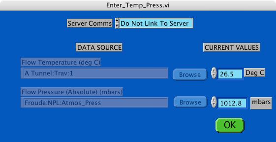
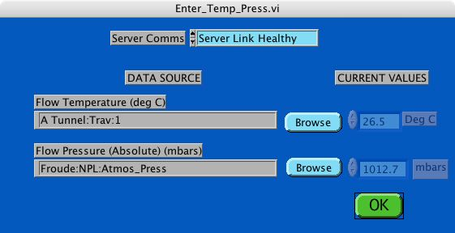

|
This is the Enter_Temp_Press.vi dialog that should be displayed when you click on Edit Values If you do not have a server computer from which you can obtain suitable background conditions select the Do Not Link To Server option as shown below The current values of temperature and pressure can be entered here. The Channel names are greyed out as these names are not significant if you are not linked to the server |
|
In the EnFlo Lab where there is a server choose the Server Link Healthy option as shown below If you have a server computer in your lab that is used to log all the background conditions, you probably want the Server Link Healthy option which enables you to use for example the channel named A Tunnel:Trav:1 for the Flow temperature value and the channel named Froude:NPL:Atmos_Press for the Absolute pressure of the air in the Flow Rig. You can change the server channel you wish to use by clicking on the appropriate Browse button. The CURRENT VALUES will be greyed out if they are not able to be changed from this panel. Some Server channels are denoted Hold Value which means that you would be able to edit their value from this panel |